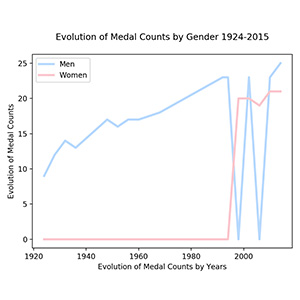
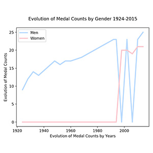

Which sport has Canada won the most Medals.
Though the bar chart, we can clearly see that Canada won the most medals in Ice Hockey sport. The bar is much higher than the other bars. The second one is Skating. Which is also higher than the other 4 sports data. Curling, skiing, bobsleigh,biathlon are much lower than skating even ice hockey. And the lowest one is Biathlon.
The proportion of gold/ silver and bronze medals in this sport.
This pie chart is directly show that in Ice-Hoockey sport, Canada not only won the most medals, but also won the most glod medals in this progect. Which is amazing that gold medals accounted for 63%, more than a half! And the second part is silver medals. The minimum of medals is bronze medals. Though this pie chart, canadian players are really good ata hockey.
Who won more medals in this sport? Men or Women.
 

The first pie chart shows that men won more medals than women, almost treble than women. The second bar chart show some details that not only the totle number, but also men won gold medals, silver medals, bronze medals are much more than women. Especially in bronze medals, women did not won a bronze medal before. The third line chart explained why it happened. Because women did not won a medal in hockey before 1980. According to the data, it is not sure whether women attend Winter Olympic before that year, but it is sure that in this sport, women won medals since 1980.
Does there has some changes about the hockey medals counts through years?
Through this line chart, it can easily find some intrsting things that no matter which kind of medals, there always have some years within "0 medal". For example, only 1956 and 1968 Canadian won bronze medals. In 1936, and since 1956 to 1998, the count of gold medal was "0". Canadian won silver medals only in the year 1936, 1960, 1992-1998, the data is really intrsting throughvisualization.